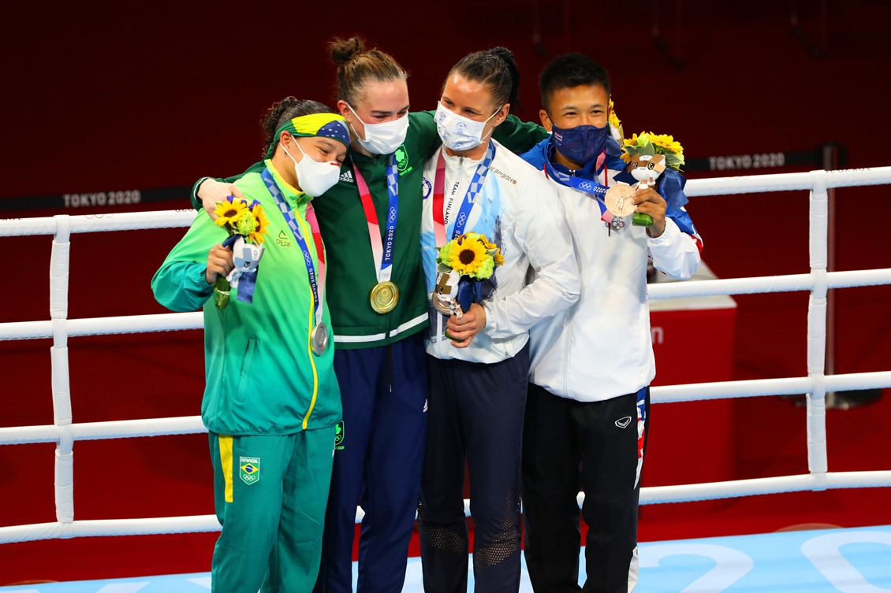

O boxe olímpico é uma modalidade do boxe que é disputada nos Jogos Olímpicos. É regido por um conjunto específico de regras e regulamentos que diferem um pouco das regras do boxe profissional. Aqui estão os principais aspectos do boxe olímpico.O boxe olímpico é conhecido por sua ênfase em técnica e estratégia, e os competidores geralmente passam por rigorosos treinamentos para se preparar para a competição. Ele oferece uma oportunidade única para boxeadores de todo o mundo mostrarem suas habilidades em um dos maiores palcos do esporte.
O peso-mosca foi um dos que deram início ao boxe feminino em Olimpíadas e o Brasil foi representado logo na estreia da categoria. Precursora do boxe feminino brasileiro, a baiana Érica Matos também se tornou a primeira brasileira a subir em um ringue olímpico em Londres-2012, no dia 05 de agosto. Na ocasião, a soteropolitana foi derrotada por 15 a 14 em uma luta muito equilibrada contra a venezuelana Kharlha Magliocco.
Em 2016, o Brasil não contou com boxeadoras na categoria. O retorno do país se deu em Tóquio-2020, com Graziele de Jesus. Ela ficou de bye na primeira rodada e estreou nas oitavas de final, perdendo para a japonesa Tsukimi Nakimi por decisão unânime. Mais tarde, Nakimi viria a conquistar a medalha de bronze na competição.
A tão sonhada revanche de Bia Ferreira no boxe Olímpico não aconteceu. A brasileira se reencontrou em Paris 2024 com Kellie Harrington, para quem tinha perdido a final em Tóquio 2020. Porém, neste sábado, 3 de agosto, a baiana perdeu a semifinal da categoria feminina 60kg. A irlandesa venceu em decisão dividida dos árbitros (4-1) e tentará ganhar o segundo ouro. Bia Ferreira, apesar da derrota, subirá no pódio com o bronze.